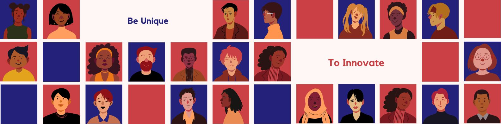

DAY 1 REVIEW
A Day of Learning and Growth with Krishnakumar Sir and His Wife: Part 2
Today was another exciting day with Krishnakumar sir and his wife. I woke up early in the morning, did some meditation, and recollected the ideas from yesterday. After getting ready, I followed the points mentioned by sir and went to the bus stop. I got on the bus and reached college, which was 1.5 km away, around 8:45 am. However, there was a traffic block, and instead of waiting in the bus, I ran to college and reached there by 9:00 am. It was hard, but it felt great to push myself beyond my limits.
Task 1 was about presenting things before the people, like a prayer, news, etc. We were asked to show our confidence, and I was sad that I didn't get the chance to present my thoughts. However, I am determined to get the mic tomorrow and show my confidence.
We had a motivational talk with sir, and he asked us to organize an event where we introduce the team and team-related stuff. This taught me how to be an organizer, where things went wrong, what I should correct, etc.
Next was a mime where we were given a theme and had to act out a topic for the audience. Although I was a bad actor who was supposed to play a dead body, I accidentally started laughing for the sudden change in music. It was a fun experience, and I learned to take things lightly and not be afraid of making mistakes.
Then, we were given videos to watch, and sir asked questions regarding them. This made me realize that the world is cruel, and we have to work hard to succeed. Even though I knew many answers, I didn't get the chance to answer, but I will try again tomorrow.
Finally, we had a group discussion where we learned many new things about our topic. The day was closed with a question section by sir, and I am looking forward to more crazy tasks and events tomorrow. I can't wait to learn more and grow as a person.